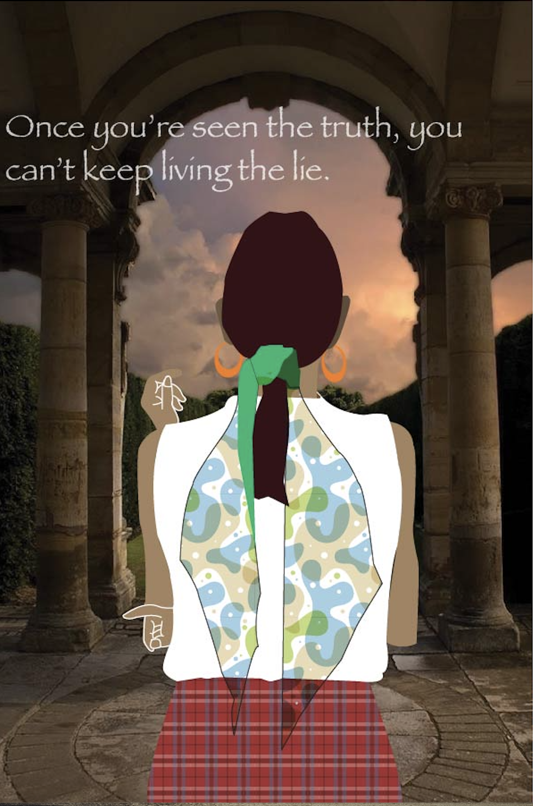

Home page | Photoshop | illustrator | Animate | Artwork | Social contact

illustrator project: This project is the most challenging one in Adobe artwork, because it is difficult to draw every shape to create the entire character. The idea about this project is “traveling alone” because I like to travel, this artwork can represent my future goals. I think one day I will try to travel to some place by myself.